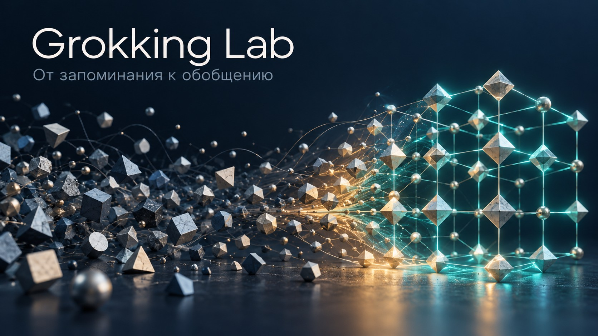

AI verification & reliability
Evidence checks, evaluation protocols, clear criteria for escalating uncertain cases to human review, and bounded controls for AI systems.
I’m Igor Rybakoff. I work on AI reliability, verifiable decisions, and research that can be inspected and reproduced.

10 of 10 reference cases replay exactly. The post-gate check is internal; scenarios are synthetic, with no production integration.
Inspect the replay artifactsA convincing output is only a starting point. The evidence, decision boundary, and handling of insufficient data need to be visible.
Focused technical collaboration, from evaluation design to a reproducible pilot.
Evidence checks, evaluation protocols, clear criteria for escalating uncertain cases to human review, and bounded controls for AI systems.
Turn an ambitious idea into a bounded prototype: define what to measure, build the test path, preserve provenance, and report limits alongside results.
Public code and documented boundaries. Research prototypes are identified as such.
Evidence-first verification for AI-assisted decisions. Frozen evidence, exact-quote validation, human review when evidence is insufficient, and a strict separation between development and blind evaluation.
Public v0.6 prototype · independent blind accuracy not yet establishedView repositoryUARS checks whether an AI-assisted claim is supported by frozen source material. The public v0.6 prototype validates evidence hashes, retrieves across normalized full text, and accepts a model judgment only when an exact quotation can be located in the retrieved evidence.
Its output distinguishes SUPPORTED, CONTRADICTED, and REVIEW. Ambiguous or insufficient evidence goes to review; a current-status claim fails closed without independent temporal validation.
The eight exposed development cases verified their source artifacts with zero blind IDs read. This is diagnostic development evidence, not a measured blind accuracy result. A frozen annotation protocol and fresh development set are still required.
A deterministic reference simulator for bounded control decisions under synthetic failures. Trust gates, replayable artifacts, and post-gate model checks.
Public v0.1 · 10/10 exact reference replays; no production integrationView repositoryRead the architecture article · RU
SEACS Lab is a runnable TypeScript reference simulator for bounded autonomous-control decisions. Synthetic gateway, authentication, database, and cache faults produce model proposals; an explicit trust gate determines which proposed actions may execute.
The committed reference matrix has ten cases. All ten exactly replay from the frozen artifacts, and all five gate outcomes are represented. Metrics are calculated by deterministic code rather than authored by an LLM.
The public simulator uses deliberately simplified policies. Its internal post-gate check is not independent verification, and the package is not connected to production infrastructure.
Query how structured data changed, reconstruct an exact historical source, and verify its SHA-256. A real Git-history demo shows the evidence path.
Public v0.1 · experimental; no general compression-superiority claimView repositorySRX explores version intelligence for evolving structured data. It can answer when a value changed, selectively reconstruct the historical file behind an answer, and verify the exact bytes against SHA-256.
A pinned demo imports fifty real first-parent commits from Vite v7.1.0, persists and reloads the temporal index, then checks four verified version records against the Git source. The core is deterministic and has no LLM dependency.
SRX is an experimental release, not a universal compressor. The published benchmark keeps negative representation results visible and makes no general superiority claim over conventional delta encoding.
Three PyTorch runs on modular addition show rapid memorization followed by delayed generalization. Open metrics, checksums, and saved model states.
Seeds 42 / 43 / 44 · 40,000 steps each · one experimental setupRead the study (Russian)All three runs finish at 100% train and validation accuracy. Validation ≥98.5% is first recorded at steps 25,600, 32,300, and 23,000 respectively.
Artifact checks confirm integrity and metric consistency. Saved replay reports come from the original experimental environment; no new independent forward pass was performed for the article review.
The result is bounded to one task and architecture. Seed controls both initialization and data split, whose effects remain confounded.
Inspect data and code
Grokking across three seeds: measured results, figures, and open evidence.
Read the article · RU →SEACS: action admission, feedback, and the limits of a reproducible reference simulator.
Read the article · RU →I develop and test ideas at the boundary of AI systems, software reliability, and knowledge architecture. My public work spans executable prototypes, controlled experiments, and written analysis.
I keep the status of each project explicit: what runs, what was measured, what remains a hypothesis, and where the evidence stops.
Full research portfolioI’m open to focused R&D collaborations, AI reliability reviews, and technical writing. Send a short description of the problem and the outcome you need.
irybakoff5@gmail.com